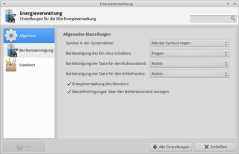
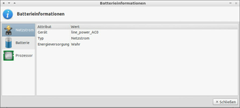
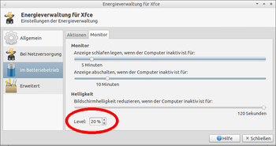
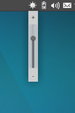
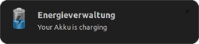

xfce4-power-manager
Dieser Artikel wurde für die folgenden Ubuntu-Versionen getestet:
Ubuntu 14.04 Trusty Tahr
Zum Verständnis dieses Artikels sind folgende Seiten hilfreich:
Einen Editor öffnen, optional
Root-Rechte, optional
Der xfce4-power-manager  ist das Energieverwaltungsprogramm von Xfce. Ab Ubuntu 11.10 wird es auch von Lubuntu verwendet. Unterschiedliche Energieprofile erlauben die Konfiguration des eigenen Computers in den unterschiedlichen Betriebsmodi (Batterie- / Netzbetrieb) nach den eigenen Wünschen. So kann man über den Einstellungsdialog u.a. den Energiesparzustand der Grafikkarte/des Monitors anpassen sowie die Taktfrequenz der CPU ändern.
ist das Energieverwaltungsprogramm von Xfce. Ab Ubuntu 11.10 wird es auch von Lubuntu verwendet. Unterschiedliche Energieprofile erlauben die Konfiguration des eigenen Computers in den unterschiedlichen Betriebsmodi (Batterie- / Netzbetrieb) nach den eigenen Wünschen. So kann man über den Einstellungsdialog u.a. den Energiesparzustand der Grafikkarte/des Monitors anpassen sowie die Taktfrequenz der CPU ändern.
Installation¶
|  |
| Energieverwaltung |
Das Programm kann über das folgende Paket installiert [1] werden:
xfce4-power-manager (universe)
 mit apturl
mit apturl
Paketliste zum Kopieren:
sudo apt-get install xfce4-power-manager
sudo aptitude install xfce4-power-manager
Nach der Installation ist im  Anwendungsmenü der Eintrag "Energieverwaltung" zu finden.
Anwendungsmenü der Eintrag "Energieverwaltung" zu finden.
Über den Befehl xfce4-power-manager wird es im Hintergund (als Daemon bzw. Dienst) gestartet [2]. Lubuntu 11.10 verwendet für den systemweiten Autostart einen Eintrag im Ordner /etc/xdg/autostart/.
Weitere Parameter können übergeben werden:
| Parameter | |
| Option | Beschreibung |
--no-daemon | Das Programm wird nicht im Hintergrund gestartet. |
--restart | Neustart der Energieverwaltung. |
--quit | Jede laufende Instanz des Programms wird beendet. |
|  |
| Batterieinformationen |
Über einen Rechtklick  auf das Akkusymbol in der Systemleiste öffnet sich ein Kontextmenü. Hier können einige Betriebsmodi direkt aufgerufen werden. Hinter "Batterieinformationen" verbergen sich Informationen zum Netz- und Akkubetrieb sowie zu laufenden Prozessen.
auf das Akkusymbol in der Systemleiste öffnet sich ein Kontextmenü. Hier können einige Betriebsmodi direkt aufgerufen werden. Hinter "Batterieinformationen" verbergen sich Informationen zum Netz- und Akkubetrieb sowie zu laufenden Prozessen.
Über "Einstellungen" kann die Energieverwaltung konfiguriert werden.
Konfiguration¶
Das Menü unterscheidet sich – je nach Version des Programms – in einigen Punkten voneinander.
| Konfiguration | |
| Menüpunkt | Beschreibung |
| "Allgemein" | Konfiguration der Tasten, Benachrichtigungen und die Energieverwaltung des Monitors sowie Anzeige des Symbols im Benachrichtigungsfeld (Systray) steuern. |
| "Bei Netzversorgung" | Aktionen definieren, welche in diesem Modus ausgeführt werden sollen. |
| "Im Batteriebetrieb" | Festlegen, welche Aktionen durchgeführt werden sollen, wenn das Notebook im Akkubetrieb läuft. Dazu zählt die Vorgehensweise bei kritischem Akkuzustand. |
| "Erweitert" | Schlafmodus definieren (Standby/Ruhezustand), wann Energiezustand als niedrig zu erachten ist ... |
Bildschirmhelligkeit reduzieren¶
|  |
| Bildschirmhelligkeit reduzieren |
Um Strom zu sparen, kann die Helligkeit des Bildschirms bei Untätigkeit nach einer gewissen Zeitspanne automatisch reduziert werden. Unter "Einstellungen -> im Batteriebetrieb -> Monitor" gibt es ganz unten den Eintrag "Level" (siehe Abbildung). Über eine Prozentangabe kann festgelegt werden, wieweit der Bildschirm abgedunkelt wird. Mit dem Schieberegler darüber wird die Zeitspanne von 0 (= deaktiviert) bis maximal 120 Sekunden eingestellt, nach der diese Einstellung aktiv wird.
Es kommt vor, dass diese Einstellungsmöglichkeit nicht mit jeder Hardware funktioniert.
Bildschirmhelligkeit über das Panel regeln¶
Möchte man unter Xfce (unter LXDE bzw. Lubuntu funktioniert das Plugin nicht) die Bildschirmhelligkeit mit der Maus regeln (z.B. weil die Funktionstasten nicht funktionieren), kann man ein Plugin installieren [1] :
xfce4-power-manager-plugins (universe)
mit apturl
Paketliste zum Kopieren:
sudo apt-get install xfce4-power-manager-plugins
sudo aptitude install xfce4-power-manager-plugins
|  |
| Bildschirmhelligkeit regeln |
Dann erscheint in der Liste der Panel-Plugins ein neues Element "Plugin zur Helligkeitsreglung" oder alternativ als "Energieverwaltungserweiterung". Wenn man dieses dem Panel hinzufügt. lässt sich beim Überfahren mit der Maus die Helligkeit per Mausrad ändern. Wer kein Mausrad hat, kann auch einfach auf das Symbol klicken, um einen Schieberegler zu erhalten. Die Abstufung ist meist auch viel feiner als mit der Tastatur.
Problembehandlung¶
Videowiedergabe¶
Bisher ungelöst ist die Problematik, dass die Energieverwaltung Tätigkeiten wie beispielsweise das Anschauen einer DVD als Untätigkeit fehlinterpretiert und den Bildschirm abschaltet. Als spezielle Lösung wurde zwar Caffeine entwickelt (das leider nicht in allen Fällen Abhilfe schafft), allerdings hat das Problem eine tiefere Ursache: Wenn eine Anwendung nicht mitteilt, dass sie aktiv ist, dann kann eine Energieverwaltung auch nicht wissen, dass sie nicht eingreifen soll.
Auf der anderen Seite haben Anwendungsentwickler, die Abhilfe schaffen möchten, ihrerseits Probleme: Es gibt inzwischen mehrere unterschiedliche, teilweise desktop-spezifische Energieverwaltungen, die man beim besten Willen nicht alle berücksichtigen kann. Am einfachsten gelingt das noch innerhalb einer Desktop-Umgebung, was aber wiederum voraussetzt, dass man, um beim obigen Beispiel zu bleiben, ausschließlich den projekteigenen Medienplayer einsetzt. Nur kann dieses fein austarierte Gleichgewicht bereits in dem Augenblick gestört werden, wenn Distributionen ihre eigenen Standardanwendungen festlegen.
Pragmatische Lösung: man deaktiviert die Stromsparmechanismen für den Bildschirm in dem Augenblick, wo sie als störend empfunden werden, und schaltet sie hinterher wieder ein. Dazu aktiviert man über das Panelsymbol die Nutzungsart "Präsentation". Falls es trotzdem zu einer Abdunklung des Bildschirms kommt, kann ein kleines Shell-Skript weiterhelfen.
Menü-Eintrag¶
Wenn unter LXDE kein Menüeintrag vorhanden ist, ändert man mit einem Editor [3][4] in der Datei /usr/share/applications/xfce4-power-manager-settings.desktop eine Zeile. Hier den Ursprungseintrag:
OnlyShowIn=XFCE;
Dieser wird in Folgendes abgeändert:
OnlyShowIn=XFCE;LXDE;
Nach dem Speichern ist ein Menü-Eintrag unter "LXDE-Menü -> Einstellungen -> Energieverwaltung" zu finden.
Symbol im Benachrichtigungsfeld¶
Sofern man die Anzeige des Symbols (Tray Icon) in den Einstellungen des Programms versehentlich deaktiviert hat, kann man den Manager über xfce4-power-manager-settings starten [2] und die Anzeige des Symbols erneut aktivieren.

 Übersichtsartikel
Übersichtsartikel- Erstellt mit Inyoka
-
 2004 – 2017 ubuntuusers.de • Einige Rechte vorbehalten
2004 – 2017 ubuntuusers.de • Einige Rechte vorbehalten
Lizenz • Kontakt • Datenschutz • Impressum • Serverstatus -
Serverhousing gespendet von